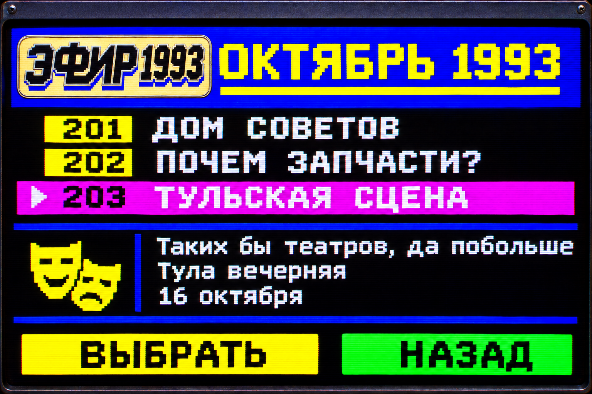
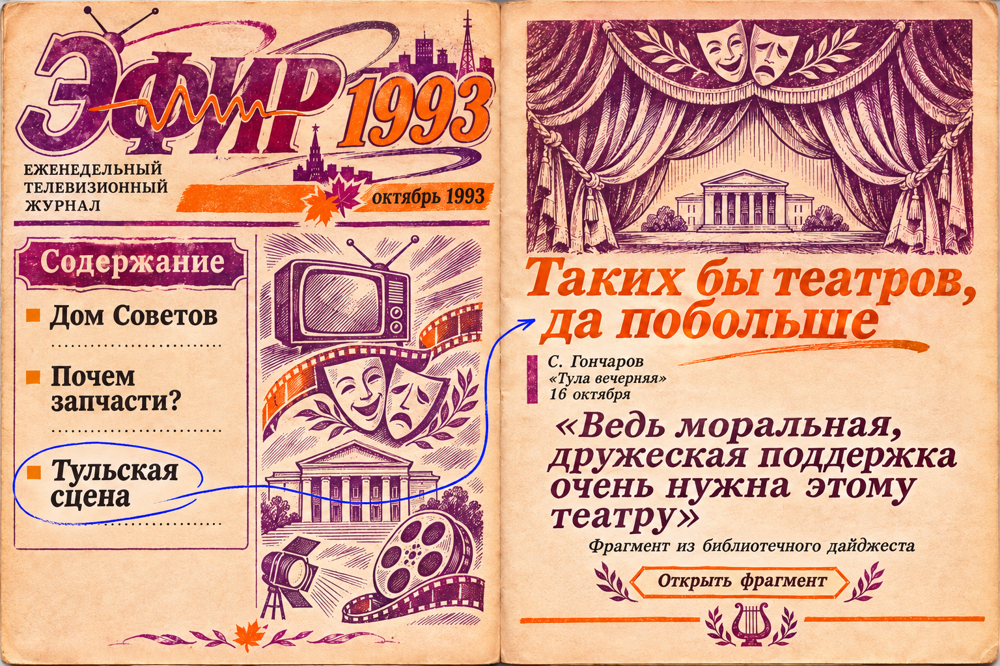

Выберите строку или наберите 201, 202, 203 на клавиатуре.
Найти в архиве
Увеличить экран
Страницы выпуска
К экрану ×
Найти в архиве
Все материалы
Документы
Пресса и листовки
Фотографии
Кинохроника
Предметы
Открыть источник ↗
Лицензия ↗
← К результатам поиска
Выберите строку на экране.
Закрыть ×